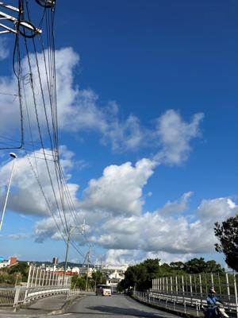

うるがいの話 ある日
最新: 都市伝説【うるがいの話 ある日】とは 一日だけのプログです
『うるがいの話』の最新一日だけのプログで、通信料が少なく経済的だ。カニの画像をクリックすると全ての日付が載る『うるがいの話』サイトを表示します
|
|
【うるがいの話】 うるがい(ｳﾙｶﾞｲ urugai)とは、『もずくがに』の名前でとても大きくなります。 |
|---|---|
|
|
【カミマヤーの話】 猫のことを方言でマヤーといいます。カミマヤー（kamimayaa）とは、神の猫のことです。 |
|
【たながぁの音楽】 たながぁ（ﾀﾅｶﾞｰ tanagaa）とは手長えびのことで、何種類かあり大きいのは車 エビぐらいになります。 |

|
【ぶながぁの話】 ぶながぁ(ﾌﾞﾅｶﾞｰ bunagaa)とは、赤い髪の毛、赤い身体、そして身長は１ｍ２０ｃｍ ぐらい、川の蟹を食べているの目撃された。場所は沖縄県国頭郡大宜味村のと ある村僕の隣近所に住んでいる爺さんから、聞いた話です。 |
|
|
【ギーマの話】 ギーマ(giima)とは、山原の里山に咲くスズランに似た、 花を付けます。実は食べられます、 気が付くと口の周りが紫になっています。 |
2023年06月08日 (木）都市伝説
14:41

『偉大なる失敗』マリオ・リヴィオ／著 より引用
あるとき、物理学者のルードヴィグ・シルバースタインがエディントンに歩み
寄り、一般相対性理論を理解できる科学者は世界で三人がエディントンだと伝
えた。エディントンがしばらく黙り込んでいると、シルバースタインは「そん
なに謙遜しなさんな」と励ました。すると、エディントンはこう答えた。「ま
ったく逆です。三人めは誰だろうと考えていたところなんです」。
確かにそんな何処かで目にしたことがある、さて３名目ってだれなんだろうと
ＣｈａｔＧＰＴへ尋ねるが、そもそも３名を否定された（けっ）、ＢＩＮＧは
アインシュタインが生きている時代、一般相対性理論を理解できる科学者は、
世界で３人しかいなかったという説があります。それらの３人は、フランスの
数学者ポアンカレ、ドイツの物理学者マックス・プランク、ドイツの物理学者
ヴィーンです。ただし、この説には異論もあるようです。
フムフム、ネットを検索すると
外相対性理論を理解してる人は3人だけだった?この3人は誰?
やはり、都市伝説か。
１４時３５分 ビットコインの総資産 ￥１０、７０４（↓１６４）